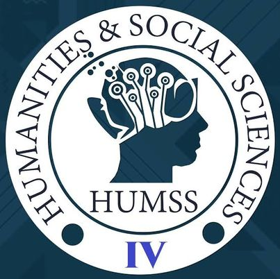

HUMSS
The HUMSS strand offers more opportunities than most people think. Contrary to popular belief, not all HUMSS students dream of becoming politicians. And if you're sitting there thinking that HUMSS students are up to no good, this list of suggested and possible jobs will prove you wrong and these are the courses you'll be choosing what your beloved Teacher, Lawyer, Psychologist, Political Editor, Criminologist
